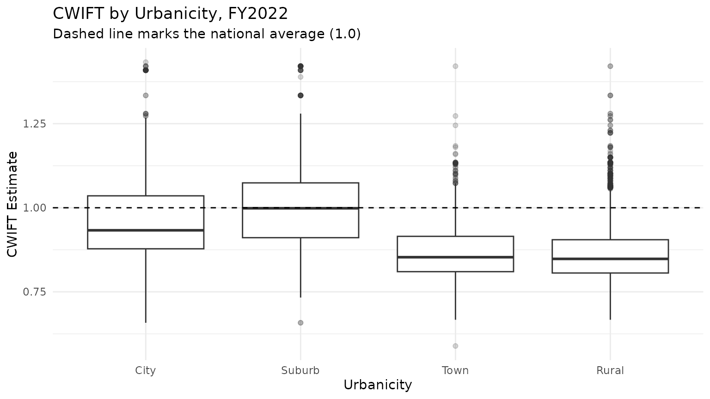
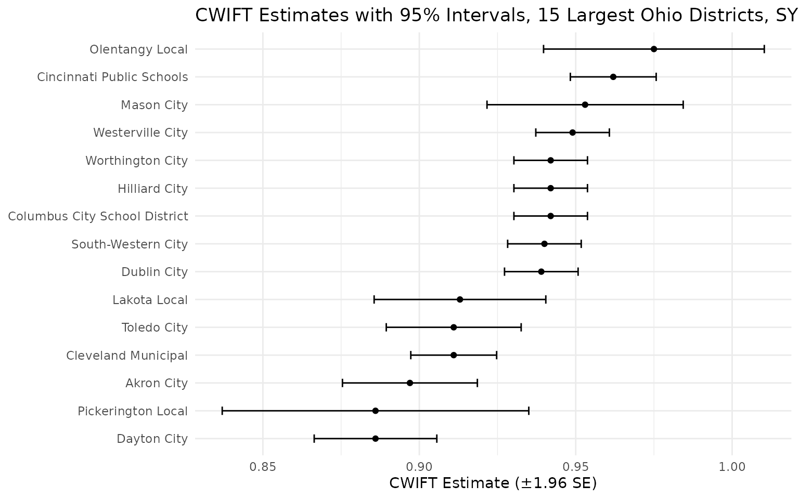

What CWIFT is
The Comparable Wage Index for Teachers (CWIFT) is a National Center for Education Statistics (NCES) EDGE index of how much it costs to employ college-educated workers in a given labor market, relative to the national average. It lets you account for the fact that a dollar buys less teacher labor in a high-wage metro than in a low-cost rural area.
edfinr provides four CWIFT columns:
-
cwift_est– the index value (roughly centered on 1.0; above 1.0 means higher-than-average labor costs). In the skinny dataset. -
cwift_imputed–TRUEif the value was imputed rather than observed. In the skinny dataset. -
cwift_se– the standard error of the estimate (full dataset). -
cwift_impute_method– how the value was produced:"observed","interpolated_2019_2021", or"carried_forward_2022"(full dataset).
When not to use CWIFT
CWIFT is a labor-cost index, not a general price
deflator. Use cpi_adj (see the “CPI Adjustments”
vignette) to convert dollars across time; use CWIFT to compare
labor costs across places in the same year. It does not deflate
construction costs or non-labor inputs, and combining it with CPI is a
two-step adjustment, not a single one (see below).
Coverage and imputation
CWIFT is not available for every edfinr year. FY2012-FY2014 predate the series, FY2020 was not published (the ACS 2020 estimates were withheld), and no FY2023 release existed at the time of processing.
us_sy12_to_sy23 <- get_finance_data(yr = "all", dataset_type = "skinny") |>
group_by(year) |>
summarize(
n = n(),
observed = sum(cwift_imputed == FALSE, na.rm = TRUE),
imputed = sum(cwift_imputed == TRUE, na.rm = TRUE),
missing = sum(is.na(cwift_est)),
.groups = "drop"
)
us_sy12_to_sy23## # A tibble: 12 × 5
## year n observed imputed missing
## <int> <int> <int> <int> <int>
## 1 2012 15484 0 0 15484
## 2 2013 15523 0 0 15523
## 3 2014 15596 0 0 15596
## 4 2015 15675 13152 0 2523
## 5 2016 15699 12934 0 2765
## 6 2017 15746 12917 0 2829
## 7 2018 15741 12916 0 2825
## 8 2019 16628 12893 0 3735
## 9 2020 16605 0 12860 3745
## 10 2021 16638 12862 0 3776
## 11 2022 16652 12873 0 3779
## 12 2023 16613 0 12860 3753The imputation rules:
-
FY2012-FY2014: no release; all four columns are
NA. -
FY2020: interpolated as the mean of FY2019 and
FY2021 for LEAs present in both years
(
cwift_impute_method == "interpolated_2019_2021"). The interpolatedcwift_seis an approximation, not an NCES-published value. -
FY2023: carried forward from FY2022
(
cwift_impute_method == "carried_forward_2022").
Treat imputed values with more caution than observed ones;
cwift_imputed makes it easy to filter them out.
How is CWIFT distributed?
Before ranking districts, it helps to see the index’s spread. Labor costs rise with urbanization, so the distribution shifts upward from rural districts to cities. This example uses FY2022, the most recent observed (non-imputed) year.
us_sy22 <- get_finance_data(yr = "2022", geo = "all", dataset_type = "full")
us_sy22 |>
filter(!is.na(cwift_est), !is.na(urbanicity)) |>
ggplot(aes(x = urbanicity, y = cwift_est)) +
geom_boxplot(outlier.alpha = 0.2) +
geom_hline(yintercept = 1, linetype = "dashed") +
labs(
title = "CWIFT by Urbanicity, FY2022",
subtitle = "Dashed line marks the national average (1.0)",
x = "Urbanicity",
y = "CWIFT Estimate"
) +
theme_minimal()
High-cost and low-cost districts
us_sy23 <- get_finance_data(yr = "2023", geo = "all", dataset_type = "full")
# highest-cost labor markets among larger districts
us_sy23 |>
filter(!is.na(cwift_est), enroll > 10000) |>
arrange(desc(cwift_est)) |>
select(dist_name, state, cwift_est, cwift_se, cwift_impute_method) |>
head(5)## # A tibble: 5 × 5
## dist_name state cwift_est cwift_se cwift_impute_method
## <chr> <chr> <dbl> <dbl> <chr>
## 1 San Francisco Unified CA 1.43 0.011 carried_forward_2022
## 2 San Mateo-Foster City CA 1.42 0.011 carried_forward_2022
## 3 Cupertino Union CA 1.41 0.008 carried_forward_2022
## 4 East Side Union High CA 1.41 0.008 carried_forward_2022
## 5 Fremont Union High CA 1.41 0.008 carried_forward_2022
# lowest-cost labor markets among larger districts
us_sy23 |>
filter(!is.na(cwift_est), enroll > 10000) |>
arrange(cwift_est) |>
select(dist_name, state, cwift_est, cwift_se, cwift_impute_method) |>
head(5)## # A tibble: 5 × 5
## dist_name state cwift_est cwift_se cwift_impute_method
## <chr> <chr> <dbl> <dbl> <chr>
## 1 Huntsville Isd TX 0.744 0.037 carried_forward_2022
## 2 Cabell County Schools WV 0.753 0.024 carried_forward_2022
## 3 Lawton OK 0.754 0.024 carried_forward_2022
## 4 Hallsville Isd TX 0.757 0.051 carried_forward_2022
## 5 Gallup-Mckinley Cty Schools NM 0.761 0.07 carried_forward_2022Reading cwift_se
cwift_se is the standard error of
cwift_est; smaller values mean a more precise estimate. It
is most useful when comparing two districts whose point estimates are
close – if their intervals overlap heavily, treat them as similar.
Remember that the standard error for interpolated FY2020 values is an
approximation.
Plotting estimates with intervals of plus or minus 1.96 standard errors makes the overlap visible. Among Ohio’s largest districts, several point estimates that differ in the second decimal place have intervals that overlap substantially, so the data cannot distinguish their labor costs:
us_sy22 |>
filter(state == "OH", !is.na(cwift_est), !is.na(cwift_se)) |>
slice_max(enroll, n = 15) |>
ggplot(aes(x = cwift_est, y = reorder(dist_name, cwift_est))) +
geom_errorbar(
aes(xmin = cwift_est - 1.96 * cwift_se, xmax = cwift_est + 1.96 * cwift_se),
width = 0.3
) +
geom_point() +
labs(
title = "CWIFT Estimates with 95% Intervals, 15 Largest Ohio Districts, SY2022",
x = "CWIFT Estimate (±1.96 SE)",
y = NULL
) +
theme_minimal()
Recipe: labor-cost-adjusted per-pupil dollars
edfinr ships the raw index rather than precomputed
adjusted columns, so you can divide any per-pupil dollar figure by
cwift_est to express it in labor-cost-adjusted terms.
Districts in expensive labor markets look relatively lower after
adjustment. One known simplification: only the labor share of spending
(roughly 80 percent of current expenditure) actually varies with wages,
so dividing all dollars by the index applies the labor-cost correction
to non-labor spending too. This is the standard convention, but it
overstates the correction somewhat.
us_sy23 |>
filter(!is.na(cwift_est), cwift_est > 0) |>
mutate(rev_total_pp_cwift = rev_total_pp / cwift_est) |>
arrange(desc(cwift_est)) |>
select(dist_name, state, rev_total_pp, cwift_est, rev_total_pp_cwift) |>
head(5)## # A tibble: 5 × 5
## dist_name state rev_total_pp cwift_est rev_total_pp_cwift
## <chr> <chr> <dbl> <dbl> <dbl>
## 1 San Francisco Unified CA 29762. 1.43 20769.
## 2 Bayshore Elementary CA 31441. 1.42 22126.
## 3 Belmont-Redwood Shores Elemen… CA 18698. 1.42 13158.
## 4 Brisbane Elementary CA 33884. 1.42 23845.
## 5 Burlingame Elementary CA 19021. 1.42 13386.Combining CWIFT with CPI without double-counting
The two adjustments answer different questions, so apply them in sequence:
- Use
cpi_adjto put dollars from different years into constant dollars (adjust across time). - Divide the resulting per-pupil dollars by
cwift_estto adjust for labor costs (adjust across place).
la_ny <- get_finance_data(
yr = "2022", geo = "CA,NY",
dataset_type = "full", cpi_adj = "2023"
) |>
filter(!is.na(cwift_est), cwift_est > 0, enroll > 50000) |>
mutate(
rev_total_pp_2023 = rev_total_pp, # already in 2023 dollars
rev_total_pp_2023_cwift = rev_total_pp / cwift_est # then adjust for labor cost
) |>
select(dist_name, state, rev_total_pp_2023, cwift_est, rev_total_pp_2023_cwift)
head(la_ny, 10)## # A tibble: 7 × 5
## dist_name state rev_total_pp_2023 cwift_est rev_total_pp_2023_cw…¹
## <chr> <chr> <dbl> <dbl> <dbl>
## 1 Corona-Norco Unified CA 17474. 1.07 16362.
## 2 Elk Grove Unified CA 17097. 1.11 15389.
## 3 Fresno Unified CA 23700. 1 23700.
## 4 Long Beach Unified CA 20558. 1.15 17877.
## 5 Los Angeles Unified CA 29953. 1.15 26046.
## 6 San Diego Unified CA 28217. 1.10 25746.
## 7 Nyc Chancellor's Off… NY 43116. 1.16 37169.
## # ℹ abbreviated name: ¹rev_total_pp_2023_cwiftDo not CPI-adjust cwift_est itself – it is an index, not
a dollar amount, and get_finance_data() never scales
it.